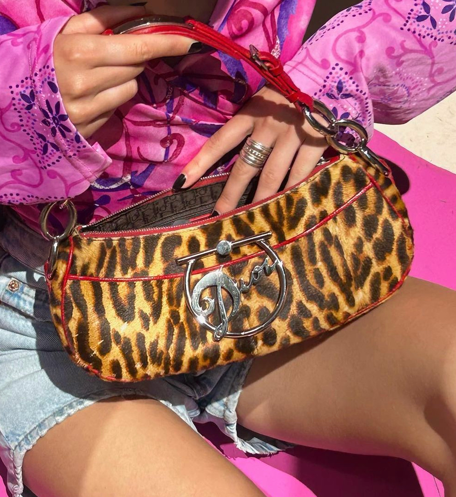

Vintage designer bags
Ontdek tijdloze luxe en tweedehands parels!
Wat doen wij?
Wij restaureren designer tassen en verkopen dit weer in onze webshop. Als je tweedehands tassen koopt is dit meestal goed voor het milieu. Er hoeft niks nieuws gemaakt te worden. Dit scheelt grondstoffen, afval en energie. Maak tweedehands designer tassen je eerste keus. Naast milieuwinst is dit ook een winst voor je portemonnee.
